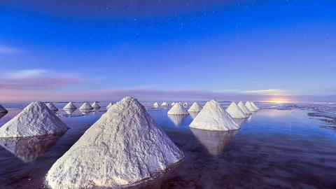
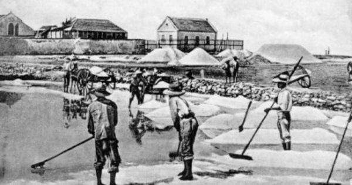
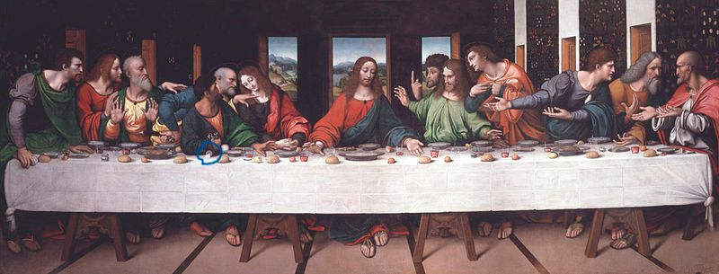
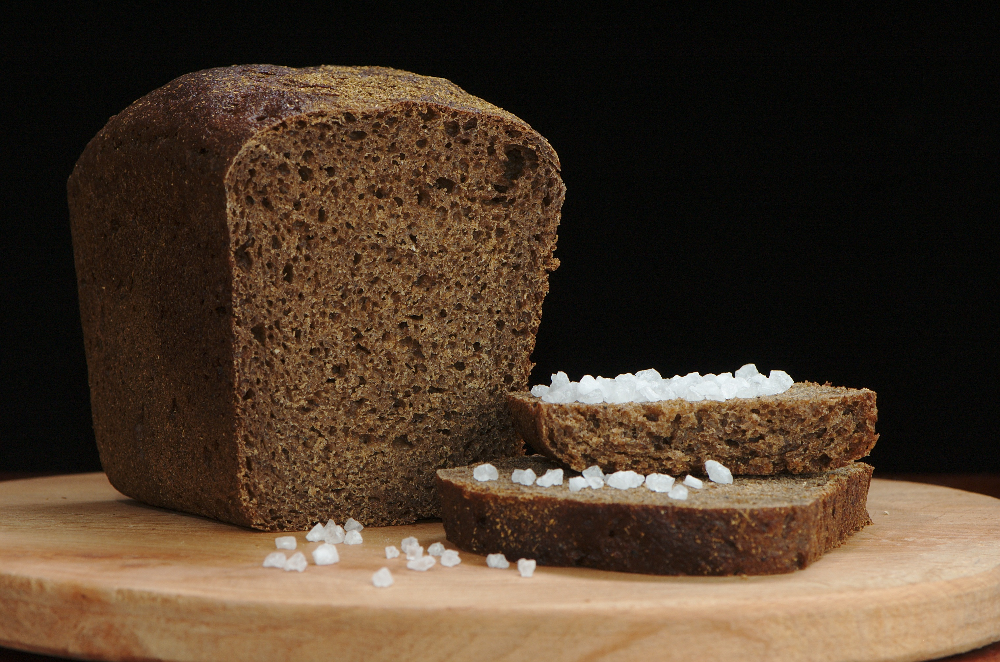

Skôr ako by som začala rozoberať soľ samotnú v umení by som sa rada stručne zamerala na históriu soli a ako vlastne ovplyvnila náš samotný život a ako by sme sa bez nej nezaobišli.
Už počas histórie bola soľ mimoriadne dôležitou súčasťou každodenného života našich predkov. Samotná soľ sa hojne využívala nielen pri každodennej konzumácii a konzervovaní potravín, ale taktiež bola veľmi významnou súčasťou ekonomickej, mytologickej a náboženskej oblasti každodenného života.
| Odkazy |
| DOMOV |
| SOĽNÉ SOCHY |
| SOĽNÁ BAŇA WIELICZKA |
| SOĽNÉ LAMPY |
 Soľ bola schopná spôsobiť aj vypuknutie konfliktov, napr. francúzska revolúcia a indické hnutie za nezávislosť. V starodávnych dobách bola soľ mimoriadne hodnotnou komoditou výmenného obchodu a tento fakt podnietil vznik tzv. „soľných ciest“, ktoré významnou mierou prispeli k rozvoju celosvetovej sieti obchodu so soľou.  Dokonca v niektorých oblastiach sveta soľ fungovala aj ako platidlo. Špeciálne prídely soli dostávali vojaci rímskych légií, tzv. „salarium argentum“, v čom má korene aj anglické slovo salary, teda plat.
Soľ bola dôležitou súčasťou náboženských rituálov a symbolizovala čistotu. V Biblii sa nachádza viac ako 30 zmienok o soli, napr. „Vy ste soľ zeme“. Na slávnej maľbe Leonarda da Vinciho „Posledná večera“, Judáš práve vysypal misku soli. Tento akt je všeobecne známy ako predzvesť smrti a nešťastia.  V budhistickej tradícii zase soľ odpudzuje zlých duchov a očisťuje okolie. Z tohto dôvodu je v budhistickom prostredí zvykom prehodiť soľ cez plece človeka pred vstupom do domu. V mnohých kultúrach sa pre návštevu tradične ponúkne chlieb so soľou ako znak pohostinstva.  V Indii darovanie soli symbolizuje šťastie, ba dokonca odkazuje aj na oslobodenie Indie Mahatmá Gándhím. Zaujímavosťou je, že súčasťou oslobodzovacieho aktu bola aj symbolická prechádzka smerom na pobrežie, ktorej cieľom bolo získanie nezdaniteľnej soli pre chudobných. Na záver je možné dodať, že vzácna látka známa v súčasnosti pod názvom soľ, od starodávnych dôb predstavuje základ života a zanechala svoju nezmazateľnú stopu v mnohých kultúrach a tradíciách sveta. Máme šťastie, že skutočne žijeme v dobe, v ktorej máme možnosť získať vysokokvalitnú soľ s fascinujúcou históriou.
zdroje: https://saliussalt.sk/pages/history-of-salt
e-mail autora stránky: dzurovasofia9@gmail.com